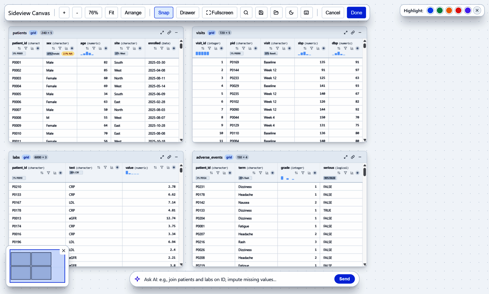
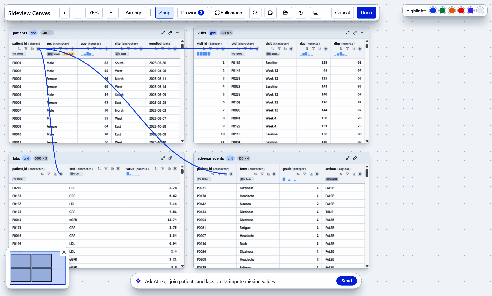
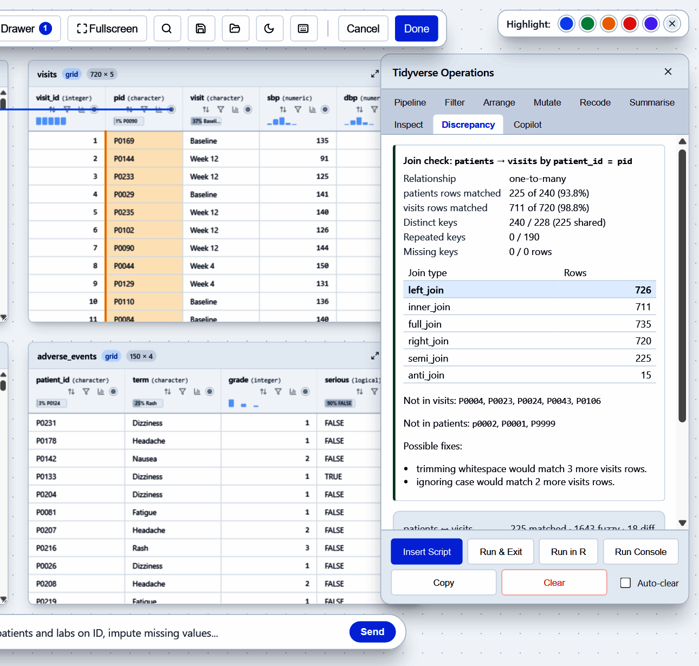
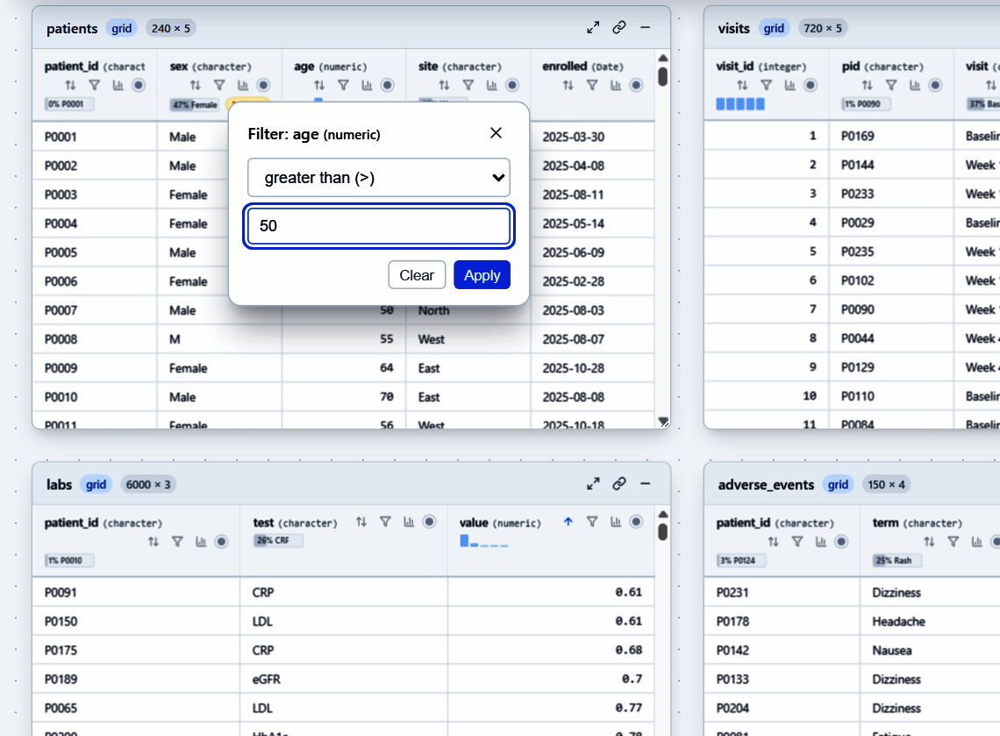
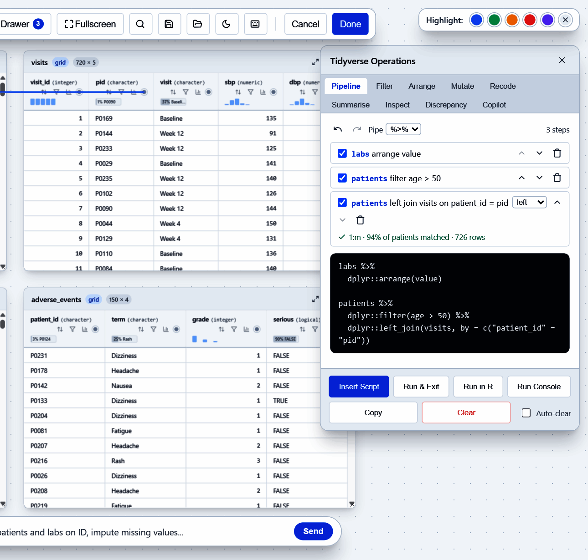
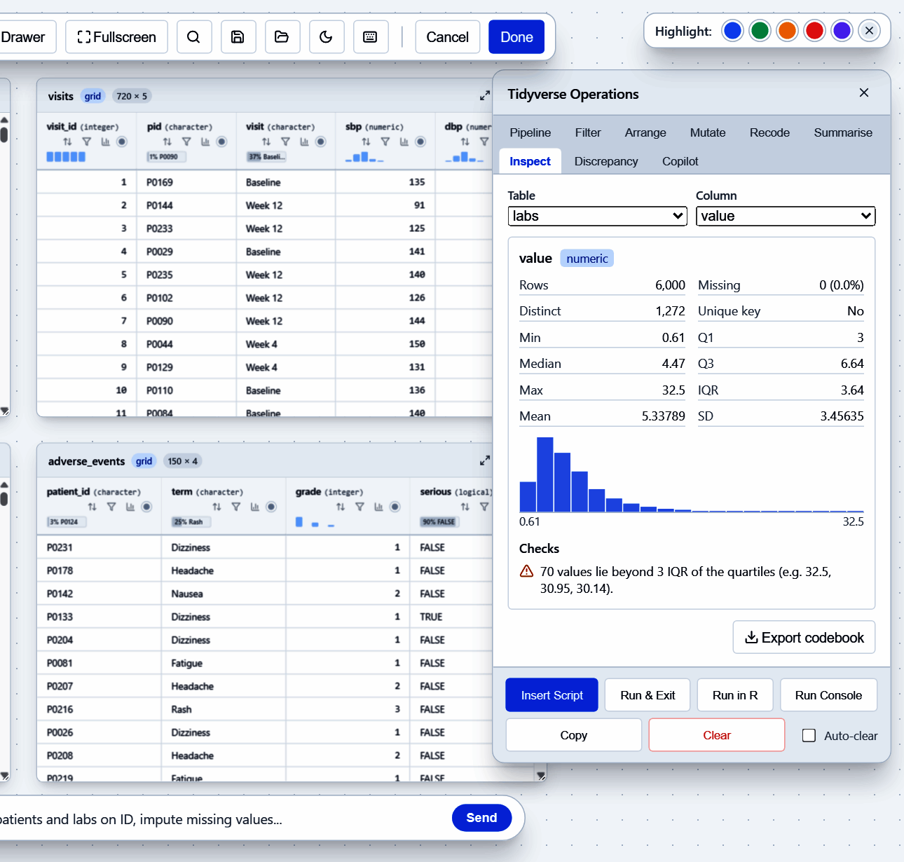
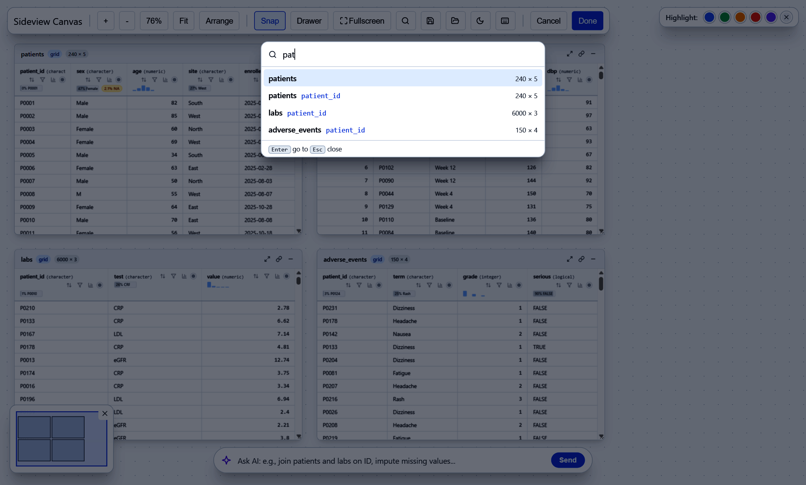
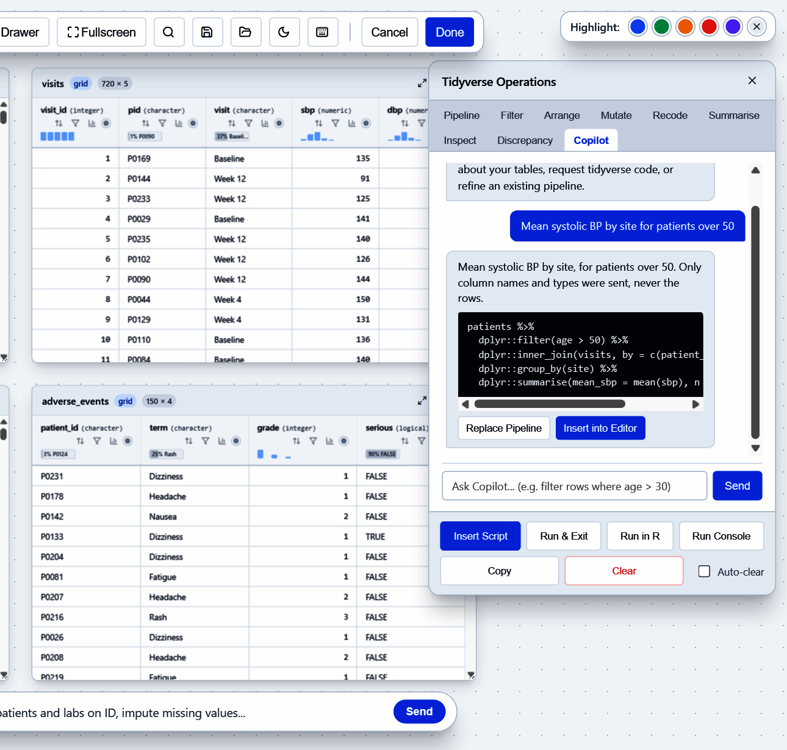
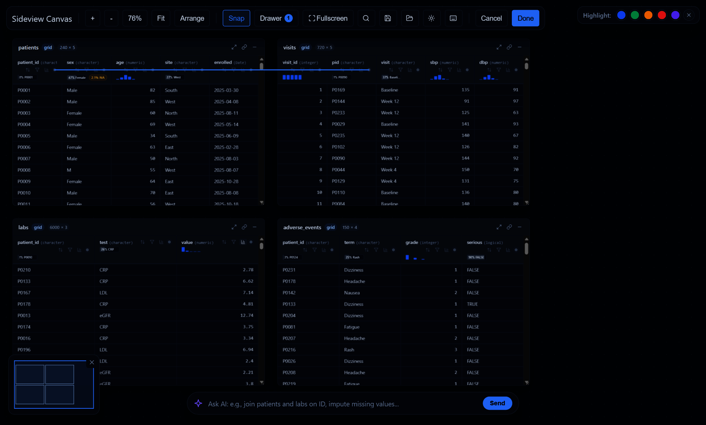
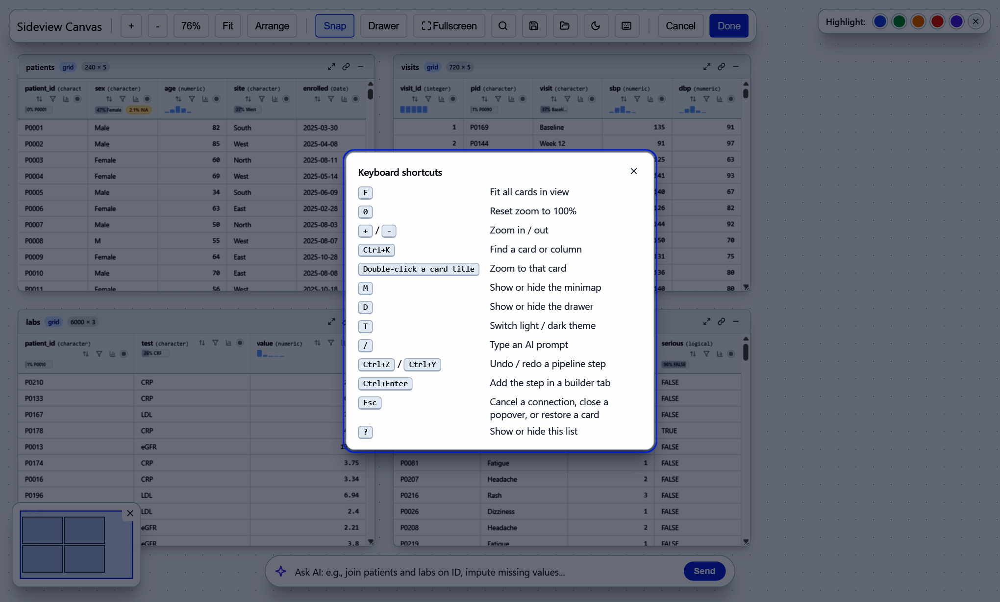

Every screenshot below comes from this call, run on synthetic study tables (no real patients):
sideview(patients, visits, labs, adverse_events)The canvas

Each table becomes a card. Drag a card by its title, zoom with the mouse wheel and pan by dragging the background. Fit shows every card, Arrange puts them back in a grid and the minimap (bottom left) jumps to any part of the canvas. Each column header shows its type, a sparkline and badges for missing values or the most common value.
Draw a line to join tables

Click the round port on a column header, then the port on a column in
another card. sideview draws a spline and writes the dplyr
join. The key rows light up in both cards. Connect more columns between
the same two cards for a multi-key join, and click a spline to remove
it.
Check the join before you run it

Every new join is checked against the full data, not only the rows on screen:
- the key relationship (1:1, 1:m or m:m, with a warning for many-to-many);
- how many rows match in each direction;
- the number of rows each join type would return;
- example keys that are in one table but not the other;
- fixes such as trimming spaces or ignoring case, and how many more rows they would match.
The Discrepancy tab also lists near-matching values and can add an automatic clean-up step.
Sort and filter from the header

Use the arrows in a header to sort and the funnel to filter. In the gadget both run in R on the whole table, so the result is right for every row, not only the rows the card has loaded.
A pipeline you can edit

Each sort, filter, join, rename, recode, mutate, reshape or summarise
becomes a step in the Pipeline tab. You can switch a
step off, move it, delete it, undo or redo, and change the join type.
The code below the steps always matches them. Choose %>%
or |>. Then:
- Insert Script puts the code at the cursor in RStudio.
- Run Console sends it to the console.
-
Run in R runs it and keeps the result as
sv_result. - Run & Exit sends it to the console and closes the canvas.
The Filter, Arrange, Mutate, Recode and Summarise tabs build steps from a form.
Inspect a column and export a codebook

The chart button in a header opens the Inspect tab:
rows, missing values, distinct values, whether the column is a unique
key, quartiles or top levels, a histogram and data-quality checks.
Export codebook writes a data dictionary for every
table (sv_codebook()).
Big tables
Arrow tables, datasets and duckdb tables go on the canvas as they
are, for example sideview(visits_db, patients). A card
shows a 50-row preview, but when the duckdb, dbplyr and DBI packages are
installed, sorting, filtering, the join check, the inspector and
the codebook use the whole table. duckdb does the work and only
summaries and row windows come back into R; sideview never collects the
table. The card header shows the true row count, and a descending sort
puts the true maximum first.
If duckdb is not installed, or the link to a table is lost, the header reads “First 50 of 1,234,567 rows” and the checks say “Based on the first 50 rows”, so a preview is never mistaken for the whole table.
The code you get back stays lazy and ends in one
collect():
visits_db |>
dplyr::filter(sbp > 140) |>
dplyr::left_join(patients, by = "id", copy = TRUE) |>
dplyr::collect()If Run in R fails on a step that needs data in R,
move collect() above it.
Known differences from an in-memory table:
- “Contains” on a number matches its text. A double is
"130.0"in duckdb and"130"in R, and float noise or scientific notation can differ. The filter is a literal match,stringr::str_detect(col, "<escaped literal>"). - A POSIXct value at exactly midnight, and
-0, can print differently. - Join keys of different types compare as text, and double keys compare exactly.
- Arrow time-zone offsets are computed for 1900 to 2100, and duckdb
TIMESTAMPTZcolumns show in UTC. - Joining arrow with duckdb copies the arrow side into a duckdb temporary table, which uses memory.
- duckdb 1.4.3 can crash on an arrow factor column that contains
NA. If generated code that usesarrow::to_duckdb()hits it, convert the factor to character first. - The codebook adds a
rows_profiledcolumn next ton; for a preview-only card it is 50 whilenis the true row count.
Find any card or column

Press Ctrl+K and type part of a table or column name,
then press Enter to zoom to it. Double-clicking a card title also zooms
to that card.
Ask the copilot

The Copilot tab and the AI bar at the bottom send your question to a local Ollama model or an OpenAI-compatible service. Only the table schema is sent (names, types, sizes), never the data rows. Replace Pipeline or Insert into Editor uses the answer. The copilot is optional; everything else works without it.
Dark theme and keyboard shortcuts

The moon button (or T) switches between light and dark.
The default follows RStudio’s theme, and sideview(theme = )
accepts "light", "dark",
sv_theme() or a bslib::bs_theme().

Press ? for every shortcut.
Share it as a web page
sideview_widget() gives the same canvas as an htmlwidget
for Quarto, R Markdown or save_sideview(). In a saved page,
join checks, the inspector and the codebook run in the browser. Buttons
that need R are hidden.